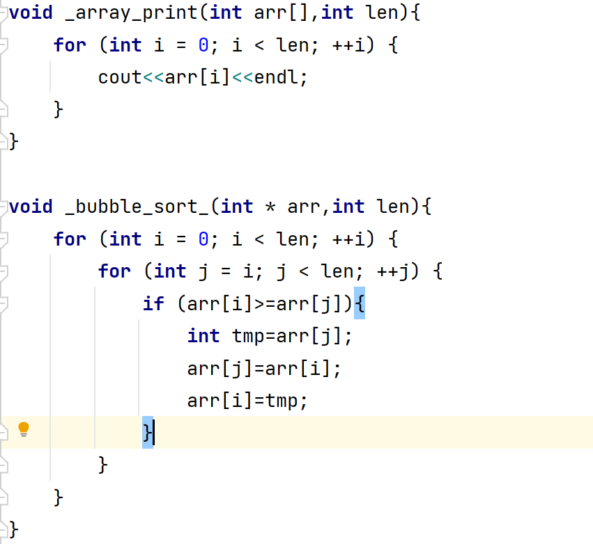
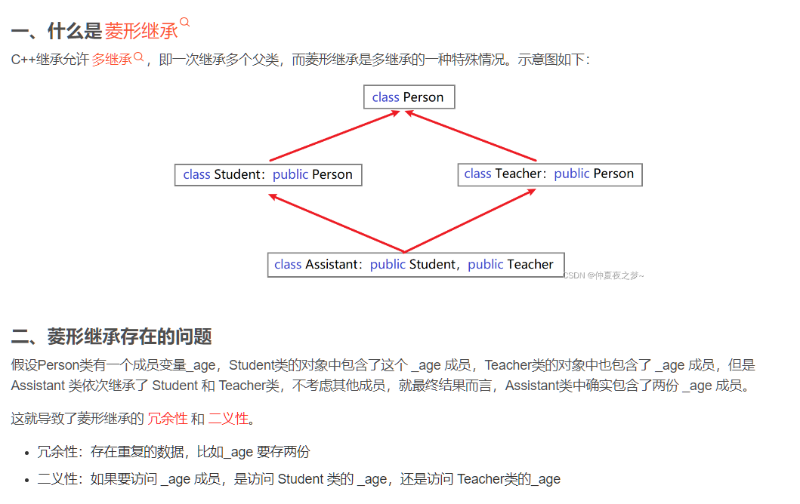

C++
C++实现数据结构和初步的认识
鉴于未来数据结构和算法的实现我想通过C++来实现，现在简要总结下C++的常用方法和数据结构类型
头文件和方法声明
等同于C语言
标准输入输出函数
std::cout << "Hello, World!" << std::endl;
引入 using namespace std;这可以避免函数要不断的添加前缀
using namespace std;
...
int input;
cout<<"Hello world"<<endl;//输出函数
cin>>input;
printf("%d",input);
...
传递函数的不同方式

const修饰指针
- 修饰常量
- 修饰指针
- 修饰常量和指针
int main() {
int a = 10;
int b = 10;
//const修饰的是指针，指针指向可以改，指针指向的值不可以更改
const int * p1 = &a;
p1 = &b; //正确
//*p1 = 100; 报错
//const修饰的是常量，指针指向不可以改，指针指向的值可以更改
int * const p2 = &a;
//p2 = &b; //错误
*p2 = 100; //正确
//const既修饰指针又修饰常量
const int * const p3 = &a;
//p3 = &b; //错误
//*p3 = 100; //错误
system("pause");
return 0;
}
空指针和野指针
NUll Point
int main() {
//指针变量p指向内存地址编号为0的空间
int * p = NULL;
//访问空指针报错
//内存编号0 ~255为系统占用内存，不允许用户访问
cout << *p << endl;
system("pause");
return 0;
}
Wild Point
int main() {
//指针变量p指向内存地址编号为0x1100的空间
int * p = (int *)0x1100;
//访问野指针报错
cout << *p << endl;
system("pause");
return 0;
}
数组作为函数展示：
void array_print(int arr[],int len){
for (int i = 0; i < len; ++i) {
cout<<arr[i]<<endl;
}
}
void bubble_sort_(int * arr,int len){
for (int i = 0; i < len; ++i) {
for (int j = i; j < len; ++j) {
if (arr[i]>=arr[j]){
int tmp=arr[j];
arr[j]=arr[i];
arr[i]=tmp;
}
}
}
}
int main(){
int arr[]={10,2,4,4,3,5,9,1,3};
bubble_sort_(arr,8);
array_print(arr,8);
}
当数组名传入到函数作为参数时，被退化为指向首元素的指针
删除数组元素空间
int arr[] = new[10];
delete[] arr;
内存发生取消和回收：
int *a=new int [10];
cout<<a<<endl;
int *p=a;
delete[] a;
int *m=p;
cout<<p<<endl;
cout<<m<<endl;
引用
语法： 数据类型 &别名 = 原名
例子：
int a = 10;
int b = 20;
//int &c; //错误，引用必须初始化
int &c = a; //一旦初始化后，就不可以更改
c = b; //这是赋值操作，不是更改引用
函数传参：
//1. 值传递
void mySwap01(int a, int b) {
int temp = a;
a = b;
b = temp;
}
//2. 地址传递
void mySwap02(int* a, int* b) {
int temp = *a;
*a = *b;
*b = temp;
}
//3. 引用传递
void mySwap03(int& a, int& b) {
int temp = a;
a = b;
b = temp;
}
引用传参：
class RainyInteger {
friend ostream &operator<<(ostream& out,RainyInteger rainyInteger);
public:
RainyInteger(){
//初始化数据：
this->rainy_num=0;
}
void speak(RainyInteger *r){
cout<<r->rainy_num<<endl;
}
private:
int rainy_num;
};
main(){
RainyInteger integer;
integer.speak(& integer); //传入引用而不是指针，否则报错
}
类
注意事项
在C++中实例化一个类不需要用new。也可以用new，但是区别是：不使用new，开辟栈空间，使用new开辟的空间为堆空间。这显然是因为程序员只操作堆空间的原因使然
与C语言结构体的区别
访问控制符是唯一区别，所有的结构体默认public，但是类则是private
类的构造函数，析构函数和拷贝构造函数
静态变量和成员变量
静态变量语法：static 数据类型 变量名
类里面：类::变量名
成员变量语法：数据类型 变量名
静态方法类似，同时在头文件里面定义的时候可以具有方法体
代码如下：
People.h
using namespace std;
class People {
public:
People(int age,string name){
this->age=age;
this->name=name;
}
//作用函数
void speak(People *p){
cout<<p->name<<endl;//相当于this.name
cout<<p->age<<endl;
}
int age;
string name;
static string defaultName;
static void defaultFunc();
};
People.cpp
#include "People.h"
//静态变脸
string People::defaultName;
void People::defaultFunc() {
}
构造函数（Constructor）
构造函数语法：类名(){}
在定义有参构造函数后，不再提供无参构造函数
#####析构函数（Destructor），通Java,可重载，释放内存时使用
析构函数语法：~类名(){}
- 构造函数，没有返回值也不写void
- 函数名称与类名相同
- 构造函数可以有参数，因此可以发生重载
- 程序在调用对象时候会自动调用构造，无须手动调用,而且只会调用一次
拷贝构造函数
如果属性有在堆区开辟的，一定要自己提供拷贝构造函数，防止浅拷贝带来的问题
//
// Created by Rainy-Heights on 2023/10/27.
//
#ifndef OBJECT_C_STUDENT_H
#define OBJECT_C_STUDENT_H
#include <iostream>
using namespace std;
class Student {
public:
Student(){
cout<<"这是无构造函数"<<endl;
}
Student(int age,string name){
cout<<"这是有参构造函数"<<endl;
_stu_age=new int [age];
_stu_name=name;
}
//拷贝构造 函数
Student(const Student &student){
cout<<"拷贝构造函数"<<endl;
_stu_name=student._stu_name;
_stu_age=new int [*student._stu_age];//指向对象的值，这里还是实现了值的拷贝
}
~Student(){
cout<<"析构函数"<<endl;
}
public:
int *_stu_age;
string _stu_name;
};
#endif //OBJECT_C_STUDENT_H
==如果用户定义有参构造函数，c++不在提供默认无参构造==，但是会提供默认拷贝构造
==如果用户定义拷贝构造函数，c++不会再提供其他构造函数==
this指针
成员函数访问时候的隐形的this指针变量
this对于类来说就是自己的地址
例如：
RainyInteger * getAddr(){
return this;
}
友元
相当于内部标志为friend即可访问私有成员
- 全局函数作为友元：
class StrictBoy{
friend void func(Student *student);
public:
StrictBoy(){
this->girlFriend="女朋友";
this->money=100;
}
private:
String girlFriend;
public:
int money;
void func(StrictBoy * strictBoy){
cout<<strictBoy.girlFriend<<endl;//可以访问私有的变量了，牛头人既视感
}
};
- 类作为友元
class Building;
class goodGay
{
public:
goodGay();
void visit();
private:
Building *building;
};
class Building
{
//告诉编译器 goodGay类是Building类的好朋友，可以访问到Building类中私有内容
friend class goodGay;
public:
Building();
public:
string m_SittingRoom; //客厅
private:
string m_BedRoom;//卧室
};
Building::Building()
{
this->m_SittingRoom = "客厅";
this->m_BedRoom = "卧室";
}
goodGay::goodGay()
{
building = new Building;
}
void goodGay::visit()
{
cout << "好基友正在访问" << building->m_SittingRoom << endl;
cout << "好基友正在访问" << building->m_BedRoom << endl;
}
void test01()
{
goodGay gg;
gg.visit();
}
int main(){
test01();
system("pause");
return 0;
}
- 成员函数作为友元：
class Building;
class goodGay
{
public:
goodGay();
void visit(); //只让visit函数作为Building的好朋友，可以发访问Building中私有内容
void visit2();
private:
Building *building;
};
class Building
{
//告诉编译器 goodGay类中的visit成员函数 是Building好朋友，可以访问私有内容
friend void goodGay::visit();
public:
Building();
public:
string m_SittingRoom; //客厅
private:
string m_BedRoom;//卧室
};
Building::Building()
{
this->m_SittingRoom = "客厅";
this->m_BedRoom = "卧室";
}
goodGay::goodGay()
{
building = new Building;
}
void goodGay::visit()
{
cout << "好基友正在访问" << building->m_SittingRoom << endl;
cout << "好基友正在访问" << building->m_BedRoom << endl;
}
void goodGay::visit2()
{
cout << "好基友正在访问" << building->m_SittingRoom << endl;
//cout << "好基友正在访问" << building->m_BedRoom << endl;
}
void test01()
{
goodGay gg;
gg.visit();
}
int main(){
test01();
system("pause");
return 0;
}
运算符重载：
作用：实现对类变量的自定义运算方法
可实现重载的运算符：
- 加号运算符
- 左移运算符
- 递增运算符
- 赋值运算符
- 关系运算符
- 函数调用运算符
//这里是表示对输出流里面的操作符实现重载
ostream& operator-(ostream& out,Person& p){
out<<"通过友元实现对私有变量的访问"<<p.m_A<<p.m_B;
}
表示的意义就是对符号进行了自定义
案例
实现自己的数据类型
雨山的整型数据
class RainyInteger {
friend ostream &operator<<(ostream& out,RainyInteger rainyInteger);
public:
RainyInteger(){
//初始化数据：
this->rainy_num=0;
}
//前置++操作
RainyInteger& operator++(){
rainy_num++;
return *this;
}
//后自增操作：???
RainyInteger& operator++(int){
RainyInteger tmp= *this;
rainy_num++;
return tmp;
}
void speak(RainyInteger *r){
cout<<r->rainy_num<<endl;
}
private:
int rainy_num;
};
继承
语法：class 子类 : 继承方式 父类
class Father{
};
class Child1: public Father;
class Child2: private Father;
class Child3: protected Father;
构造和析构顺序：
子类继承自父类之后，调用子的构造函数将会造成父类的构造函数的调用，析构函数则相反，因为清理先从最小的子类开始清理。
菱形继承问题
简而言之就是父类被多个子类继承，多个子类被某一个孙子类同时继承
示意图：

解决办法->虚继承 关键字：virtural
在基类的两个子类中继承基类时，使用virtual 关键字。虚继承基类。使得基类的属性成员只有一份。
class Animal
{
public:
int m_Age;
};
class Sheep : virtual public Animal {};
class Tuo : virtual public Animal {};
class SheepTuo : public Sheep, public Tuo {};
继承之后子类获得了什么？
公共变量和方法肯定是获得了。
同时：
父类中私有成员也是被子类继承下去了，只是由编译器给隐藏后访问不到